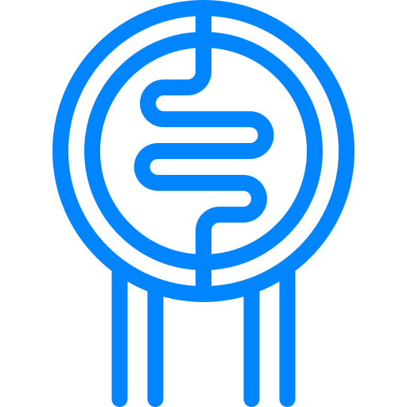

Teste e diagnostique circuitos com Arduino usando a Buard.
A Buard ajuda você a investigar falhas em circuitos físicos com Arduino, por meio de testes guiados e orientações simples para encontrar possíveis problemas.
Conheça a Buard
Uma ajuda para quem está aprendendo eletrônica.
A Buard foi criada para facilitar o diagnóstico de circuitos físicos, principalmente para quem ainda está aprendendo eletrônica e Arduino. Em vez de depender apenas de tentativa e erro, a ideia é ajudar você a testar partes do circuito, eliminar possíveis causas e entender melhor onde o problema pode estar. A proposta é tornar o processo de investigação mais simples e mais fácil de acompanhar.
Um resultado. Um próximo passo.
Entenda o que aconteceu no teste e por onde continuar a investigação.
Vamos entender seu sensor de luz.
Uma leitura é o começo da investigação. A Buard pode ajudar você a entender o que conferir depois.
- 1Escolha o que quer testar
- 2Observe a resposta do circuito
- 3Confira as orientações

A leitura não mudou.
O que foi observado?
Neste exemplo, a leitura ficou praticamente igual ao cobrir e iluminar o sensor.Isso é uma pista para investigar. Ainda precisamos conferir a montagem e o pino escolhido para o teste.
Ver o que conferir
Antes de mexer na montagem, desconecte o Arduino e qualquer outra fonte de alimentação.
Confira se os jumpers estão firmes e se a ligação do sensor corresponde ao esquema do seu circuito. Depois, compare o pino da montagem com o escolhido para a leitura.
Demonstração visual, sem leituras de um Arduino conectado.
Investigue uma etapa de cada vez.
Do primeiro teste até a próxima verificação, acompanhe o raciocínio.
O sensor de luz está respondendo?
Mude a luz.
Com o circuito preparado para o teste, cubra o sensor e depois ilumine novamente.
A leitura mudou?
Neste exemplo, a leitura permaneceu praticamente igual nas duas situações.
Confira a montagem.
Desligue todas as fontes de alimentação antes de conferir as conexões e o pino usado pelo sensor.
Esta sequência ilustra a proposta da Buard. Os resultados apresentados não vêm de um circuito conectado.
Seu circuito deu uma pista.
Parta do que você percebeu para entender o que pode conferir.
“Meu LED não acende.”
Você montou o circuito, mas algo não saiu como esperado. Por onde começar?
Vamos conferir uma possibilidade de cada vez.O que vale conferir?
Abra uma orientação para acompanhar este exemplo.
Antes de ajustar componentes ou fios, desconecte o Arduino e qualquer outra fonte de alimentação.
01 · As conexões estão firmes?
Compare a montagem com o esquema do seu projeto. Veja se os jumpers estão nas fileiras previstas da protoboard e se algum fio ficou solto.
02 · A posição do LED está correta?
Confira a indicação de anodo e catodo do componente e compare com o esquema. Verifique também o resistor previsto no projeto antes de religar.
03 · O pino corresponde ao código?
Compare o número do pino usado na montagem com o definido no seu programa. Essa conferência é feita por você; este exemplo não analisa o código do Arduino.
Estas são possibilidades para investigar, sem um defeito confirmado.